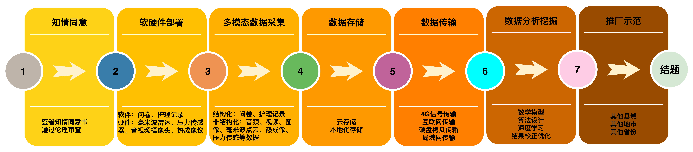
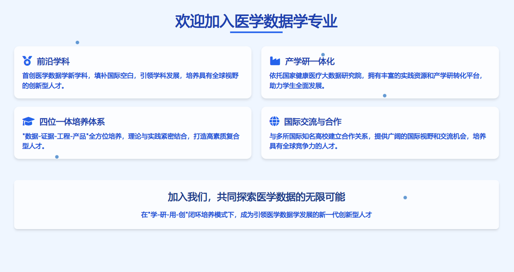
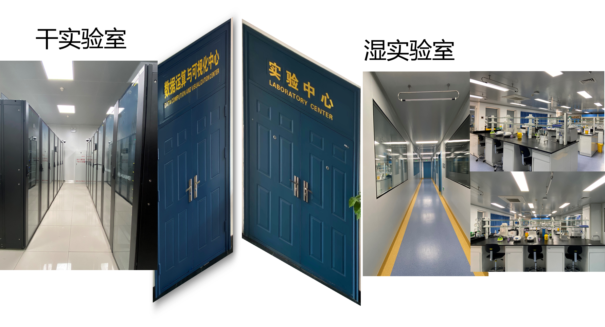

BIO-MEDICAL DATA SCIENCE HIGHLIGHTS
生物医药数据科学专业核心亮点
依托《2026-04-02 生物医药数据科学专业亮点》文档重组展示内容，突出“平台顶配、学科首创、三段培养、成果领先”四条主线。 页面固定尺寸 9120×1120，便于领导现场审阅并快速增删内容。
一、依托国家级平台，形成“教研产”一体支撑
本专业依托国家健康医疗大数据研究院。该平台由山东大学联合山东省卫生健康委员会、济南市人民政府共建， 同时是国家健康医疗大数据中心（北方）的核心科研载体与智力支撑。
平台配置覆盖数据中心、实验中心、产业孵化器和协同研究团队，为课程教学、科研训练、场景实践与成果转化提供完整底座。
国家级产学研平台
数据中心 + 实验中心
临床协同应用场景
平台场景展示

二、首创医学数据学新学科，专业实力全国领先
专业聚焦“数据-证据-工程-产品”四位一体复合型人才培养，精准填补医学数据学人才培养体系空白。 2022-2025 年连续四年获得 A+ 评级，核心培养内容纳入教育部相关引导性专业指南。
团队同步推进教学规范与教材建设，形成“标准引领 + 课程落地 + 教学指导”的一体化输出能力。
- 连续四年 A+（软科、ABC）
- 编著指南性专著并制定专业建设规范
- 15 门系列教材 + 5 本教学指导入选“十四五”规划
学科建设与创新图示

三、三段式交叉融合培养，打通“学-研-用-创”闭环
第一阶段：软件与数理基础
以数学分析、高级程序设计等课程夯实推导能力、建模能力和工程编程能力。
第二阶段：医学数据核心课程
依托研究院课程体系，强化医学概论、健康数据治理、人工智能技术等专业素养。
第三阶段：临床场景工程实践
对接齐鲁医院等协作中心开展实践教学，以真实场景推动能力迁移和成果转化。
全程实行“一对一导师制”，配合启发式教学与科研训练，推动学生从“被动接受”转向“主动创造”。
师资与教学支撑图文穿插

支撑方向覆盖医学、统计、生物信息、计算机与工程应用，满足复合型人才培养的长期需求。